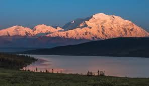
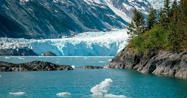

The Last Frontier — a land of towering peaks, midnight sun, and wilderness unlike anywhere else on Earth. I spent two years here, and it changed my life.
From June 2023 to May 2025, I lived and served in Alaska as a full-time missionary. I traveled from Anchorage to remote villages accessible only by small aircraft,
met people from dozens of different cultures and backgrounds, and developed a deep appreciation for one of the most rugged and beautiful places in the world.
Alaska is the largest U.S. state by area — more than twice the size of Texas — and is home to over 3 million lakes, 100,000 glaciers, and more coastline than all
other U.S. states combined. Less than 750,000 people live there, meaning Alaska has more wilderness per person than almost anywhere else on the planet.
This page is a tribute to a state that shaped me. Whether you're drawn to the wildlife, the culture, the extreme seasons, or the sheer scale of the landscape,
Alaska has something for everyone willing to venture north.
Top Reasons to Visit Alaska
There are countless reasons to make the trip north. Here are the five biggest, each with some specifics worth knowing:
Wildlife Unlike Anywhere Else
Brown bears fishing for salmon in Katmai National Park
Humpback whale watching in Juneau and Sitka
Moose wandering through Anchorage neighborhoods
Bald eagles nesting by the thousands near Haines each fall
Denali — North America's Highest Peak
20,310 feet above sea level
Visible from Anchorage on clear days (over 130 miles away)
One of the most technically demanding climbs in the world
The Northern Lights (Aurora Borealis)
Best viewed September through March
Fairbanks is one of the best places on Earth to see them
Colors range from green to purple to deep red
Glaciers and Ice Fields
Mendenhall Glacier just outside Juneau is accessible by bus
Kenai Fjords National Park offers tidewater glaciers
Matanuska Glacier is one of the largest accessible by road
The Midnight Sun and Polar Night
Anchorage gets over 19 hours of daylight on the summer solstice
Fairbanks experiences nearly 24 hours of darkness in December
The seasons shape the culture, food, and daily life of Alaskans
Gallery

Denali at sunset — the highest peak in North America, Denali National Park, Alaska.

A tidewater glacier meets the sea in one of Alaska's stunning coastal fjords.
Alaska in Motion
Watch this stunning aerial tour of Alaska's landscapes — from glaciers and coastlines to boreal forests and the Alaska Range.
National Park Visitation Data
Alaska is home to eight national parks — more than any other state. The interactive Tableau visualization below
shows national park visitation trends across the U.S., including Alaska's iconic parks like Denali and Kenai Fjords.